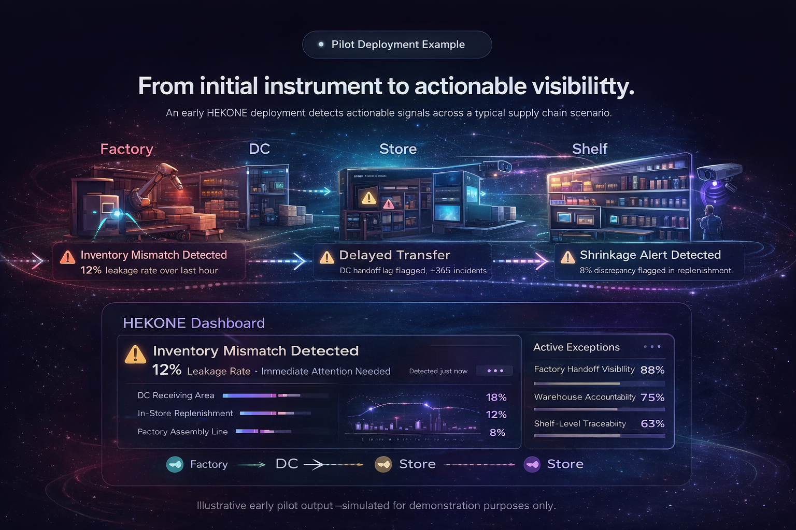

Make the invisible measurable.
HEKONE brings a new layer of physical intelligence into supply chains and operations, helping teams detect blind spots, improve accountability, and make better decisions across every handoff point.
A $112B problem hiding in plain sight.
Fragmented systems miss what actually happens on the ground—creating avoidable loss and weak control.
What isn’t measured cannot be controlled.

Blind Spots
Critical handoff points across factory, warehouse, transport, store, and shelf often operate without direct measurable visibility.
Mismatch & Leakage
Inventory, dispensing, shrink, and execution inconsistencies create gaps between what systems report and what actually happens.
Delayed Decisions
By the time loss is visible in reports, the opportunity to intervene early and correct the process has often already passed.
From blind operations to measurable control
HEKONE transforms fragmented, reactive systems into structured, real-time operational intelligence.

From initial instrument to actionable visibility
An illustrative early deployment shows how actionable signals can be detected across factory, distribution, store, and shelf environments.

HEKONE adds a physical intelligence layer to real-world operations.
We combine targeted instrumentation with a lightweight software layer to convert physical events into structured, AI-enabled, decision-ready data that teams can actually act on.
Measure
Capture key physical events at the point where visibility matters most, using selective instrumentation instead of heavy infrastructure.
Interpret
Transform raw physical signals into AI-driven operational intelligence, highlighting exceptions and enabling accountability at scale.
Control
Enable teams to reduce uncertainty, improve traceability, and respond faster across every monitored handoff point.
Instrument critical points
Deploy only where real-world measurement creates the highest operational value and fastest clarity.
Generate structured intelligence
Convert physical activity into an AI-powered data layer that integrates directly into operational decision-making.
Scale from pilot to platform
Start with focused deployments, validate outcomes, and expand into broader control across the operation.
Designed for high-value operational use cases.
HEKONE is built for environments where small visibility failures create large business consequences.
Retail Shrink Visibility
Reveal loss patterns and hidden exceptions across store-level product flow and customer-facing dispensing environments.
Warehouse Accountability
Improve confidence at receiving, storage, movement, and outbound handoff points where inconsistencies accumulate.
Manufacturing Control
Monitor physical process behavior and detect hidden operational drift before it becomes cost, waste, or rework.
Supply Chain Traceability
Create measurable visibility from origin to endpoint across fragmented physical workflows and handoff boundaries.
Why HEKONE
Traditional systems often stop at digital reporting. HEKONE is built to bring operational truth closer to the physical event itself.
Built for practical deployment
Start focused, prove value quickly, and expand where measurement improves control. The goal is not more dashboards. The goal is better operational truth.
HEKONE is designed as a control-grade intelligence layer for real-world operations.
As operations become more complex, measurable physical intelligence will become a necessity—not an option.
Pilot-oriented deployment model designed to validate value without unnecessary complexity.
Targeted hardware where it matters most, instead of expensive full-system instrumentation everywhere.
Physical sensing and software intelligence working together as a single operational control layer.
Built to grow from one use case into a broader platform across multiple handoff points and sites.
Ready to bring measurable visibility into your operation?
HEKONE is currently exploring pilot, partner, and strategic collaboration opportunities with operators, technical teams, and investors.